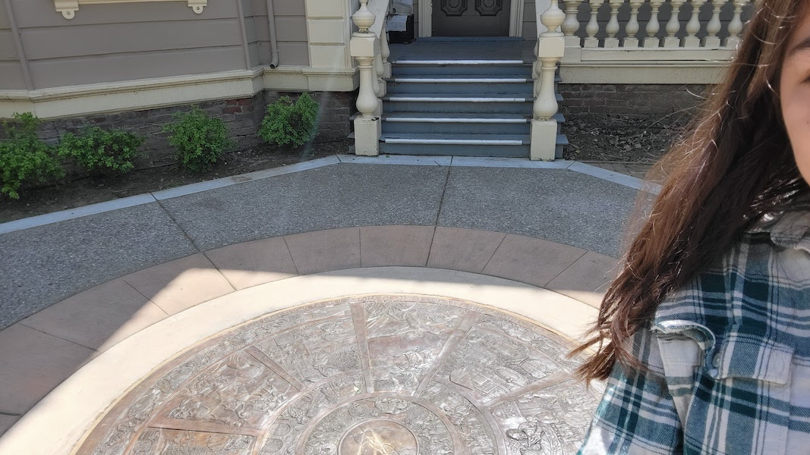

I learned that interviews were conducted with community members in order to create the seal. I also learned about how each portion of the seal represents a different part of the Davis history. I found it interesting how the artist had to account for both sides of history and include some people's losses.